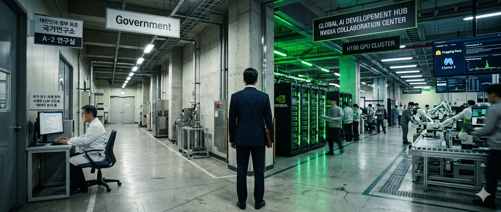

On January 15, 2026, South Korea’s Ministry of Science and ICT announced the results of the first elimination round in what the Korean press had taken to calling the AI Hunger Games.[1] Five government-funded consortia had entered the competition eight months earlier, each tasked with building a sovereign Korean foundation model — from scratch, using no foreign pretrained components. The front-runner was Naver, operator of Korea’s dominant search engine, messaging platform, and cloud infrastructure — the closest thing the country has to Google.[2]
Naver was eliminated.
The ministry’s inspectors found that Naver’s multimodal system incorporated pretrained vision and audio encoders from Alibaba’s Qwen 2.5-VL. The weights matched by more than 99 percent. The encoders had been adopted in closed form, without retraining.[3] A ministry official stated the core requirement plainly: “initializing weights and training independently.”[4] Naver’s defense — that it had “strategically adopted a verified external encoder for global compatibility” — was precisely the argument the competition was designed to reject.
NCSoft, the gaming giant, was also eliminated for underperformance. Three companies survived: LG AI Research, SK Telecom, and Upstage, a startup. Then the real shock: Naver, NCSoft, and Kakao all declined the wildcard re-entry round.[5] Korea’s three largest internet-native platforms looked at the government’s sovereign AI competition and decided it wasn’t worth playing. The wildcard slot ultimately went to Motif Technologies — another small company, not a chaebol — with KAIST. Only one other team even applied.[6]
The Paradox
South Korea has assembled all the ingredients needed to produce world-class AI.
Samsung and SK Hynix together control approximately 79 percent of the global High Bandwidth Memory market — the specialized memory chips that sit inside every NVIDIA GPU used to train every leading AI model.[7] NVIDIA cannot ship a training accelerator without them. Korea runs 1,012 industrial robots per 10,000 workers, the highest density on earth, six times the global average.[8] A quarter-million NVIDIA GPUs are being installed across Korean sovereign clouds and AI factories.[9]
The spending matches the hardware. The government has committed ₩100 trillion — roughly $74 billion — to an AI initiative spanning sovereign compute, model development, and industrial application over multiple years, and Samsung alone has pledged $230 billion in semiconductor and AI infrastructure investment through 2042.[10] These are commitments, not disbursements — the actual annual spend is a fraction of the headline number — but even the early tranches dwarf what most countries allocate to AI in total. The country’s AI Basic Act, effective January 22, 2026, makes it only the second jurisdiction after the EU to adopt comprehensive AI legislation.[11] Korea’s industrial base generates nearly $500 billion in value-added, fifth globally.[12]
Yet no Korean foundation model is part of the global conversation. Not the way France’s Mistral, China’s DeepSeek, or the UAE’s Falcon are. The models emerging from the surviving consortia — SK Telecom’s A.X K1, LG’s K-EXAONE, Upstage’s Solar Pro 2 — are competitive within their weight classes, but none is setting benchmarks that the rest of the world is chasing.[13] And the country’s most capable AI company just got thrown out of the government’s flagship competition for building on a Chinese model.
South Korea has more robots per factory worker than any country on earth. It just can’t build the brains to put inside them.
Korea is assembling the most sophisticated AI infrastructure any mid-sized power has ever built, for a revolution it cannot lead. The country is running two contradictory strategies simultaneously: one demands sovereign AI purity, the other partners with NVIDIA and uses whatever works. The question is whether that’s a systemic failure — or a strategic bet that everyone else has misread.
The Strategic Fork
To understand why $74 billion and a semiconductor duopoly haven’t produced a leading AI model, you need to see the two contradictory strategies Korea is running simultaneously, and why the competition just proved that one of them is failing.
Strategy Oneis sovereign AI purity. Build Korean foundation models from scratch, using no foreign pretrained components, trained on Korean data, running on Korean infrastructure. This is the semiconductor playbook applied to software: government-directed competition, elimination rounds, national champions selected by bureaucratic evaluation. It is the same approach that produced Samsung’s DRAM dominance in the 1980s, Hyundai Heavy Industries’ shipbuilding supremacy in the 1990s, and POSCO’s steel revolution a generation before that.[14]
Strategy Twois Physical AI pragmatism. Put the best available AI models — regardless of origin — to work inside Korea’s factories, shipyards, semiconductor fabs, and automotive plants. This is the M.AX initiative: 500 AI-powered factories by 2030; Hyundai’s approximately $3 billion Physical AI cluster with NVIDIA (formalized through an MOU with the Korean government in October 2025); Samsung’s digital twins for chip fabrication; and SK Group’s Manufacturing AI Cloud with NVIDIA Omniverse.[15] Strategy Two doesn’t care who built the brain. It cares whether the brain works on the factory floor.
The strategies contradict each other. Strategy One says: build our own models independently, and any company that uses foreign components will be eliminated. Strategy Two says: partner with NVIDIA, install Blackwell GPUs, and use whatever models produce the best outcomes. A charitable reading is that Korea is hedging — funding a long-term sovereign insurance policy while capturing near-term value from NVIDIA partnerships. But the first round’s results undermine the hedge interpretation: Strategy One didn’t just underperform. It lost its most capable participants entirely. Strategy One is sovereignty theater — the appearance of independence backed by a definition so rigid it eliminates the most capable participants. Strategy Two is where the actual investment is flowing.
And the first round just proved that Strategy One’s definition of sovereignty eliminates the companies best positioned to build competitive models, because modern AI development is inherently collaborative. Naver wasn’t cheating. It was doing what every serious AI lab does: building on the best available components. The government’s purity requirement doesn’t match how state-of-the-art AI is actually built.[16]
This is where Korea’s situation diverges from simple national AI failure. The country isn’t failing because it lacks resources or ambition. It’s failing at model-building because the same system that mobilizes $74 billion and installs a quarter-million GPUs cannot produce the software culture, talent retention, or institutional tolerance for the messy, iterative, open-source-dependent process that cutting-edge AI requires.
Why the Semiconductor Playbook Breaks
Korea has overcome technological dependency before. The pattern is so reliable it’s practically a national mythology: import → learn → master → surpass. POSCO imported Japanese steelmaking technology in the 1960s and became one of the world's largest steelmakers. Samsung licensed DRAM designs from Micron in 1983 and now controls the global memory market. Hyundai built licensed Mitsubishi engines and now sells more cars globally than Mitsubishi does.[17]
AI breaks this pattern at four points.
First, every previous mastery was a hardware problem. Steel, ships, semiconductors, automobiles — all reward capital expenditure, process discipline, and the kind of vertically integrated execution at which Korea’s conglomerates excel. AI is software. Korea has never produced a globally significant software platform. Naver and Kakao dominate the domestic market but have negligible international presence. Samsung’s attempts — Bixby, Tizen — failed globally.[18] The software gap isn’t a missing ingredient. It’s baked into the industrial model itself, which is optimized for production discipline rather than the talent-driven iteration that software demands.
Second, talent is mobile in ways it wasn’t during the semiconductor era. When Samsung was catching up in DRAM, Korean engineers stayed because there was nowhere better to go — the salary premium for leaving was modest, and the social cost was high. AI talent faces a roughly 4:1 salary differential compared to the United States, and unlike the semiconductor industry, the social cost of leaving has collapsed. Korea now ranks near the bottom of the OECD in AI talent retention — 35th out of 38 countries.[20] The talent doesn’t loop back the way semiconductor engineers did.
Third, speed matters more than scale. Samsung caught up in DRAM because catching up in fabrication is about capital expenditure and process discipline — you invest massively and grind down yield curves. AI moves on to research breakthroughs and iteration speed. DeepSeek’s R1 — the Chinese model that alarmed Western labs — was built by a relatively small team whose final training run cost a fraction of what its American competitors spend per run, though total research compute was likely much higher.[22] Korea’s AI ecosystem is tilted toward large corporate teams rather than the lean, fast-moving labs that produce breakthroughs. Korean AI startups have a 56.2 percent three-year survival rate, according to industry data.[23]
Fourth, and most damagingly, the purity requirement inverts the industrialization playbook. The Meiji patternbeganwith the importation of foreign technology — licensed designs, joint ventures, and reverse engineering. Korea’s sovereign AI competition explicitly prohibits this. Naver was eliminated for building on Qwen. The government is demanding the “surpass” step before completing the “learn” step. NYU Professor Cho Kyung-hyun called the decision “regrettable,” noting that “AI’s strength is integration, not building from scratch.”[24]
The Brain Drain Beneath the Surface
The salary gap cited above is the surface. The structural data beneath it is worse. The United States issued 5,684 EB-1 and EB-2 visas to South Koreans in 2023 — employment-based green cards, not temporary work permits — amounting to 11 per 100,000 people, compared to 0.94 for China and 0.86 for Japan.[25] On a per-capita basis, Korea exports proportionally more of its top talent to the US than any major Asian economy. And the destination is permanent: seventy-one percent of Korean PhD graduates studying in the United States plan to stay there.[21]
The reasons are structural, not mysterious. Professor salaries at private universities grew by 0.8 percent over five years — effectively a pay freeze during the most competitive global talent market in the history of technology.[26] A Korean professor earning $73,000 can command over $330,000 at a US institution.[19] Nine major national universities lost 323 professors between 2021 and mid-2025.[27] Korea ranks 35th out of 38 OECD countries in AI talent retention.[20]
The demographic backdrop makes recovery unlikely. Korea’s total fertility rate was 0.72 in 2023, rising marginally to 0.75 in 2024 — still the world’s lowest by a wide margin, less than half the OECD average of 1.43.[28] Seoul’s rate was 0.64.[29] The working-age population is projected to decline by 46 percent by 2060.[30] The window for building a domestic AI talent pipeline is not merely closing. It is being demolished by a demographic crisis that no amount of government spending can reverse within the decade that matters.
This is the doom clock that separates Korea from countries that simply haven’t invested enough. Korea has invested. The money is there. The GPUs are arriving. But the people who would turn that infrastructure into frontier AI models are leaving, and the population that would produce their replacements has the lowest fertility rate ever recorded in any industrialized nation, below even Japan’s.
What Actually Exists
The honest assessment of Korea’s AI output is more nuanced than “complete failure.” The three surviving consortia are building real models, and the factory AI programs are genuinely impressive.
SK Telecom’s A.X K1 is a 519-billion-parameter model with over 10 million subscribers to its consumer AI service.[31] LG AI Research’s K-EXAONE ranks seventh globally on the Artificial Analysis Intelligence Index, after 3.6 trillion won in R&D investment over five years.[32] Upstage’s Solar Pro 2 — a dense model from a startup, not a conglomerate — scored higher than GPT-4.1 on the same index, and its survival in the sovereign AI contest as the only independent competitor is itself telling.[33]
These are competent models. They are not frontier models. The distinction matters: a frontier model is one that other countries and companies adopt as infrastructure — the way the world runs on GPT, Claude, and Gemini. No Korean model has crossed that threshold. The open-source download numbers make this visible: LG’s EXAONE models have been downloaded roughly 170,000 times on Hugging Face; Alibaba’s Qwen2.5, at a comparable size, has been downloaded over 22 million times.[34] But then, no mid-sized power model has. Only the United States, China, and arguably France (through Mistral) have produced models that the rest of the world treats as infrastructure. Korea’s distinction isn’t that it has failed where others succeeded — it’s the chasm between its ambition, its spending, its hardware position, and the outcome. A competent model handles Korean-language tasks, powers domestic services, and runs enterprise applications. Korea’s models are impressive for a mid-sized power, but not the independence that the government’s rhetoric implies.
Where Korea’s position is genuinely strong is in industrial AI infrastructure. Samsung is building a semiconductor AI factory with over 50,000 GPUs, using NVIDIA Omniverse digital twins to optimize its own fabrication processes.[35] Hyundai Motor Group’s Innovation Hub links real-time factory data to virtual simulation, with AI-powered robotic arms targeting 30 percent productivity improvements.[36] HD Hyundai Heavy Industries is putting AI robots to work on ship maintenance, repair, and overhaul — embedding intelligence into the physical processes that generate a third of Korea’s GDP.[37] SK Group’s cloud, built on 2,000 NVIDIA RTX PRO 6000 Blackwell Server Edition GPUs, is Asia’s first enterprise-led industrial AI cloud, open to startups and government agencies.[38]
This is not theater. It is sophisticated industrial integration. But the intelligence layer tells its own story. Hyundai owns Boston Dynamics, arguably the world’s most advanced robotics company — and at CES 2026, it announced that the brains powering its Atlas humanoid would come from Google DeepMind’s Gemini Robotics models, not from any Korean AI lab.[39] The most advanced robot body on earth, built by a Korean-owned company, running on an American AI mind. The pattern is clear: Korean infrastructure around imported intelligence. Whether it’s a temporary phase or a permanent condition depends on which of two scenarios plays out.
The Outsiders
The country-AI series has found a recurring pattern: a nation’s most significant AI contributors tend to be people the system excluded or imported. Japan’s two biggest AI bets are led by Son Masayoshi (a Korean-Japanese outsider who built SoftBank despite systemic discrimination) and by the founders of Sakana AI (Google DeepMind researchers imported from abroad).[40] India’s most successful AI engineers build products for everyone except India.[41]
Korea’s version is the starkest yet, because the outsiders are still Korean — they just left. Ikkjin Ahn graduated from Seoul National University, went to Google, built YouTube’s monetization machine learning systems, and then founded Moloco in Silicon Valley in 2013. The company now generates $200 million in annual revenue, is valued at over $2 billion, and was the first Korean-founded AI unicorn in Silicon Valley.[42] Jae Lee served in Korean military cyber operations, then went to UC Berkeley, worked at Amazon and Samsung, and founded Twelve Labs in San Francisco — a video understanding AI company that has raised $107 million from NVIDIA, Intel, Samsung, and In-Q-Tel, and landed on CB Insights’ AI100 list three consecutive years. He hired the former CTO of SK Telecom as his president.[43]
Korean-trained talent, exported to the United States, is building AI companies that Samsung, SK Telecom, and Korean venture capital then invest in from across the Pacific. Korea is funding its own brain drain. At home, Upstage — the lone startup surviving the Hunger Games — was founded by a professor, not a Samsung lifer. Rebellions, the most prominent Korean AI chip startup, exists as an independent company backed by SK Telecom, SK Hynix, KT, Samsung Ventures, and Aramco — the very companies that couldn’t build the chips themselves.[44]
The Japan Mirror
Readers of this series will recognize the ingredients. Hardware excellence paired with software absence. An aging population accelerating the urgency while shrinking the talent pool. A government reaching for industrial policy tools that worked brilliantly for factories but may not translate to software. Brain drain to the United States.[45]
Japan and Korea share every systemic constraint with one critical difference. Korea sits upstream in the AI supply chain, unlike Japan. Samsung and SK Hynix control approximately 79 percent of the global HBM market, as of Q3 2025.[46] When NVIDIA ships an H100 or a Blackwell GPU, the memory inside it is overwhelmingly Korean. Korea doesn’t just participate in the AI hardware ecosystem; it also drives it. It makes the component without which no leading model can be trained.
But supply-chain leverage doesn’t automatically translate to AI sovereignty. OPEC can withhold oil because there is no short-term substitute. Korea’s HBM position is different. Micron is already qualifying competing HBM products with NVIDIA — the monopoly window is measured in quarters, not decades. And unlike oil buyers, NVIDIA and the US government can respond with export controls, chip design changes, or accelerated qualification of alternative suppliers. Korea’s leverage is real but brittle. The harder question is whether HBM dominance is its own version of “robots that don’t think” — world-class hardware capability that generates no software dividend.
The early evidence suggests the latter. NVIDIA’s Jensen Huang stood alongside Korean leadership at APEC in October 2025 and announced the delivery of over 260,000 GPUs for Korean AI infrastructure. “Korea’s physical factories can now produce intelligence as a new export,” he said.[47] What he meant was: Korea’s factories will consume the intelligence that NVIDIA and its model-building partners produce. The man selling the shovels was telling the gold miners that shovels are the real treasure.
The Japan piece in this series argued that Japan’s system is optimized for hardware precision, not software iteration, creating a doom loop that aging accelerates but didn’t cause. Korea’s variant is more painful because Korea has the specific hardware that powers AI — and it still can’t close the loop. India exports talent. Japan can’t attract or develop it. Korea has both problems AND the hardware, and the loop still doesn’t close. The binding constraint isn’t resources. It’s software culture. No amount of memory chips changes that.
What Would Have to Break
Two scenarios for Korea’s AI future, both plausible, both with specific indicators.
Scenario One: The Deployer Wins.Physical AI works. Korea’s 500 AI factories become the global benchmark for intelligent production. Samsung’s digital twins reduce semiconductor defect rates by measurable percentages. Hyundai’s AI-powered lines achieve the 30 percent productivity gains they’re targeting. Korea becomes the country no one can build without — the one that turns foundation models into factory output more efficiently than anyone else. In this scenario, model sovereignty doesn’t matter because operational sovereignty does. Korea trades chips and factory expertise for model access, and the trade is durable because no one else has Korea’s industrial density, robot infrastructure, and chaebol-scale integration.
This only works if AI-attributed productivity gains in Korean factories materially exceed gains in competitor countries using the same models. If an American plant using GPT-5 achieves the same improvement as a Korean plant using GPT-5, Korea has no advantage — just a more expensive installation.
Scenario Two: The Dependency Trap.Foreign model access is restricted by export controls, licensing changes, geopolitical tensions, or, simply, pricing power. Korea’s AI-powered factories discover that the model layer they depend on can be throttled, repriced, or withheld. The sovereign model program — the insurance policy — has already demonstrated it can’t produce frontier alternatives at the pace the factories require. Korea has built the most advanced AI-ready industrial infrastructure on the planet, and it runs on someone else’s software.
This becomes real if the geopolitical environment produces model access restrictions. The current trajectory — where NVIDIA actively courts Korean partnerships and the US-Korea technology alliance is strong — makes it less likely in the near term. But the EU’s AI sovereignty push, China’s export controls on critical minerals, and the broader pattern of technology decoupling suggest it’s not implausible over a 5-10-year horizon.
The honest assessment sits between these poles. Korea’s industrial AI strategy is real, well-funded, and grounded in capabilities no other mid-sized power matches. It is also, at its core, a strategy for being the world’s best customer of AI that other countries build. The Hunger Games didn’t just eliminate Naver. It revealed that sovereign foundation models — the insurance policy against model dependency — are incompatible with the purity the government demands.
South Korea has committed $74 billion to building the world’s most impressive collection of AI infrastructure running on someone else’s intelligence — and whether that’s a winning strategy or sophisticated capitulation is the question no one in Seoul is willing to answer honestly.
Notes
[1]Korea Herald, “LG, SKT, Upstage advance in Korea’s sovereign AI project; Naver, NC dropped in 1st round,” January 15, 2026;Inven Global, “LG AI Tops Korea’s Sovereign AI Project as Naver Cloud Fails to Advance, MSIT Confirms,” January 15, 2026. The five original consortia were selected in August 2025 from an initial ₩530 billion (~$381 million) government allocation.
[2] Naver operates Korea’s dominant search engine (with approximately 63% domestic market share perInternet Trend data via Korea Times, January 2026), the LINE messaging platform, Naver Cloud, and multiple AI research labs. It was widely considered the strongest contender in the sovereign AI competition.
[3] MSIT official briefing, January 15, 2026, as reported byInven GlobalandKorea Herald. The inspectors found Naver’s system used pretrained vision and audio encoders from Alibaba’s Qwen 2.5-VL model with weights matching by more than 99 percent, adopted in “closed form” without weight retraining.
[4] MSIT official statement, January 15, 2026, viaKorea Herald. Original Korean: the requirement is to “initialize weights and train independently.”
[5]Korea Herald, “Naver Cloud, NC AI opt out of retender in sovereign AI project,” January 16, 2026. All three companies declined the wildcard round following the January 15 elimination results.
[6]Korea Times, “Motif-led consortium joins national AI foundation model project,” February 20, 2026. Motif Technologies (with KAIST) was the only successful applicant from the wildcard round. The only other applicant was a consortium led by Trillion Labs. Naver Cloud and NC AI chose not to reapply. Science Minister Bae Kyung-hoon: “Major tech companies such as OpenAI and Anthropic were not large and globally recognized organizations from the start.”
[7]Counterpoint Research, Q3 2025. SK Hynix held 57% of the global HBM market and Samsung held 22%, for a combined Korean share of approximately 79%. In 2024, the Korean combined share was even higher at approximately 93% (SK Hynix 54%, Samsung 39%), before Micron gained share. HBM (High Bandwidth Memory) is the specialized stacked memory used in AI training accelerators.
[8]International Federation of Robotics, World Robotics 2024. Global average: approximately 162 robots per 10,000 manufacturing workers. Singapore ranks second at 770.
[9]NVIDIA announcement, APEC CEO Summit, Gyeongju, South Korea, October 31, 2025. Includes commitments from Samsung (50,000+ GPUs), Hyundai Motor Group (50,000 Blackwell GPUs), SK Group (50,000+ GPUs), and NAVER Cloud (60,000+ GPUs). See alsoKorea Herald, “Korea secures 260,000 Nvidia GPUs for AI push,” October 31, 2025.
[10] Government commitment: Korea’s Ministry of Science and ICT ₩100 trillion (~$73.8 billion at approximately ₩1,357/USD) public-private AI initiative, confirmed byCiti Research($72 billion) andAccess Partnership($73.8 billion). This is a multi-year commitment; annual disbursement data is not publicly itemized, but actual spending to date is a fraction of the headline figure. Note: some sources cite a larger $735 billion aggregate figure, but this appears to combine government and private commitments across sectors and timeframes without clear methodology; the ₩100 trillion government initiative is the verified figure. Samsung’s $230 billion commitment is a semiconductor and AI infrastructure investment plan extending through approximately 2042 per Samsung filings and press announcements — not AI-specific spending and not a near-term commitment.
[11] Korea’s AI Basic Act (formally: Basic Act on the Development of Artificial Intelligence and the Establishment of Trust) consolidates 19 previous bills and applies extraterritorially. The EU AI Act preceded it. Source:OECD/Korea Labor Institute (2025), “Artificial Intelligence and the Labour Market in Korea.” See alsoStimson Center, “South Korea’s Evolving AI Regulations,” November 2025.
[12]Stimson Center, “From Compute to Capacity: South Korea’s Approach to Industrial AI Adoption,” 2026. Manufacturing value-added approximately $500 billion, ranked fifth globally behind China, the US, Japan, and Germany, accounting for approximately one-third of GDP.
[13]SK Telecom’s A.X K1: 519 billion parameters, mixture-of-experts architecture.LG’s K-EXAONE: 236 billion parameters (MoE), ranked seventh globally on Artificial Analysis Intelligence Index.Upstage’s Solar Pro 2: 31 billion dense parameters, first Korean model to enter Artificial Analysis frontier model top 10. Upstage’s benchmark scores are competitive with individual models like GPT-4.1, but no Korean model operates at the parameter scale or general-purpose breadth of the leading frontier model families (GPT-4o/4.1, Claude, Gemini, Llama 3.1 405B). Company-stated specifications; independent benchmark results from Artificial Analysis.
[14] Samsung entered the DRAM market in 1983 by licensing technology from Micron. By 1992, it had developed the world’s first 64-megabit DRAM chip. The government-directed competition model — picking sectors, funding champions, eliminating laggards — was central to Korea’s industrialization from the 1960s onward. See Amsden,Asia’s Next Giant: South Korea and Late Industrialization(1989).
[15] M.AX (Manufacturing AI Transformation) initiative announced by Ministry of Trade, Industry, and Resources. 500 AI factory target by 2030 confirmed by MSIT,BusinessKorea, andStimson Center. Hyundai’s $3 billion Physical AI investment with NVIDIA announced at APEC, October 2025.
[16] Professor Cho Kyung-hyun (NYU): “Regrettable — AI’s strength is integration, not building from scratch.” Quoted inKorea Herald, January 20, 2026. The statement reflects a widely held view in the global AI research community that modern model development relies on open-source components, pretrained encoders, and collaborative architectures.
[17] POSCO: Founded 1968 with Japanese technology transfer from Nippon Steel. Samsung DRAM: Licensed from Micron 1983; first 64Mb DRAM 1992. Hyundai: Licensed Mitsubishi engines 1970s-80s; now outsells Mitsubishi globally. See Amsden,Asia’s Next Giant: South Korea and Late Industrialization(1989) for the canonical account of Korea’s catch-up industrialization model.
[18] Samsung’s Tizen operating system and Bixby voice assistant have negligible global market share outside Samsung’s own devices. Naver’s LINE messaging platform achieved significant adoption in Japan, Thailand, and Taiwan, but is operated through a separate Japanese entity (LY Corporation) and is not typically classified as a Korean platform success. No Korean-origin software platform has achieved the global scale of US platforms (Google, Meta, Amazon) or even European ones (Spotify, SAP). Author’s assessment based on public market share data.
[19]Korea Herald, “South Korea’s brain drain: Why top talent is leaving,” July 8, 2025. Professor salary comparison: Korean private university full professor average ₩101.4 million (~$73,000) vs. US offer of $330,000+ with research support and housing. Source: Ministry of Education data for Korean salaries; named anonymous AI researcher interview for US comparison.
[20] Korea Chamber of Commerce and Industry, Sustainable Growth Initiative (SGI), June 2025, viaKorea Herald, “S. Korea suffers OECD’s 4th-biggest AI brain drain,” June 19, 2025. Net AI talent loss of 0.36 per 10,000 people. Luxembourg (+8.92), Germany (+2.13), and the US (+1.07) are net importers. Corroborated byAsia News NetworkandBusinessKorea.
[21] Korea Chamber of Commerce SGI report, June 2025, viaKorea Herald. 71.1% of Korean PhD graduates studying in the US plan to stay long-term, up from under 70% in previous five years.
[22] The widely cited $5.6 million figure refers to the final training run ofDeepSeek V3using 2,048 H800 GPUs. DeepSeek R1, the reasoning model that drew widespread attention, was built via reinforcement learning on top of V3. The $5.6M figure excludes prior research compute, failed runs, and infrastructure — total development costs were likely significantly higher. The broader point — that breakthroughs can come from lean teams with efficient training approaches — is widely accepted. See alsoEpoch AI analysis.
[23] AI startup three-year survival rate: widely cited in Korean industry reporting. The statistic reflects the difficulty of sustaining independent AI companies in a market dominated by large conglomerate ecosystems. Precise source and methodology not independently verified; treat as B-tier contextual claim.
[24] Professor Cho Kyung-hyun (NYU),Korea Herald, January 20, 2026.
[25] Korea Chamber of Commerce SGI, June 2025, viaKorea Herald. EB-1 and EB-2 visa issuance data for South Korean nationals. Per-capita calculation: 5,684 visas / ~52 million population = approximately 11 per 100,000. Comparison figures: China 0.94, Japan 0.86, India 1.44 per 100,000.
[26] Ministry of Education data, viaKorea Herald, July 2025. Average salary for private university full professors: ₩100.6 million (2019) to ₩101.4 million (2024), representing 0.8% growth over five years.
[27] National Assembly report, submitted by Rep. Seo Ji-young. Nine major national universities (excluding Seoul National University) lost 323 professors between 2021 and May 2025. Of these, 119 faculty members left their institutions; 18 relocated abroad.Asia News Network/Korea Herald, July 2025.
[28]Statistics Korea;OECD. Total fertility rate: 0.72 (2023), 0.75 (2024). The 2024 figure represents the first increase in nine years but remains the world’s lowest. OECD average 2023: 1.43. Replacement rate: 2.1. See alsoKED Global, “South Korea welcomes more babies after downward birth rate spiral,” February 2025.
[29]Statistics Korea. Seoul metropolitan area TFR 2024: 0.64.
[30]OECD (2025), “Artificial Intelligence and the Labour Market in Korea.” Working-age population decline projection. The old-age dependency ratio is projected to exceed 75% by 2060. Corroborated by IMF Country Report No. 25/41, February 2025.
[31]SK Telecom A.X K1: 519 billion parameters, MoE architecture (33 billion active per inference), trained on ~10 trillion tokens across 1,000 GPUs by a consortium of 8 organizations. 10 million A. subscribers: SK Telecom earnings reports. Note: MoE parameter counts are not directly comparable to dense model parameters; the effective parameter count per inference is lower. Phase 1 NIA benchmark: scored 9.2 out of 10, tying for first with LG AI Research perSK Telecom newsroom.
[32] LG AI Research:K-EXAONE model, 236 billion parameters (MoE), scored highest among sovereign AI consortia in Phase 1 evaluation. Ranked seventh globally onArtificial Analysis Intelligence Index. Note: Artificial Analysis is one of several benchmark aggregators; rankings vary across evaluation frameworks (MMLU, LMSYS Chatbot Arena, etc.). LG has invested 3.6 trillion won over five years in AI R&D perLG corporate announcements.
[33]Upstage Solar Pro 2: 31 billion dense parameters. Scored 58 on theArtificial Analysis Intelligence Index(July 2025), outperforming GPT-4.1 (53) — the only Korean-developed model recognized as a “Frontier Model” by Artificial Analysis. The company was the only non-conglomerate, non-telecom entrant to advance past the first round of the sovereign AI competition. Note: Upstage has since released Solar Pro 3 (January 2026).
[34] Hugging Face download counts as of February 2026. LGAI-EXAONE/EXAONE-3.5-7.8B-Instruct: ~169K downloads. Qwen/Qwen2.5-7B-Instruct: ~22M downloads. SKT’s A.X-K1: ~4.6K downloads. Upstage SOLAR-10.7B-Instruct: ~25K downloads. Downloads are an imperfect proxy for adoption — they measure developer interest, not production deployment — but the two-orders-of-magnitude gap is directionally significant.
[35] Samsung AI factory: 50,000+ GPU commitment, using NVIDIA Omniverse for semiconductor fabrication digital twins. Announced atNVIDIA-Korea APEC events, October 2025. See alsoStimson Center.
[36] Hyundai Motor Group: 50,000 Blackwell GPUs, Innovation Hub integrating real-time factory data with virtual simulation. 30% productivity improvement target reported byStimson Centerand Hyundai corporate announcements. As this piece went to publication, Hyundai announced a ₩9 trillion ($6.3 billion) AI, robotics, and hydrogen hub in Saemangeum — including a $4 billion AI data center and a robotics cluster targeting 30,000 units annually — further evidence of Strategy Two’s momentum.The AI Insider, February 27, 2026. Commitment; construction begins 2027, completion targeted 2029.
[37] HD Hyundai Heavy Industries: AI robots for ship maintenance, repair, and overhaul. Korea’s industrial sector accounts for approximately one-third of GDP.Stimson Center, 2026.
[38] SK Group industrial AI cloud: 2,000 NVIDIA RTX PRO 6000 Blackwell Server Edition GPUs, initially at SK hynix Icheon Campus. Operated by SK Telecom. Asia’s first enterprise-led industrial AI cloud, open to startups, government agencies, and public institutions. Source:SK Group / NVIDIA joint announcement, APEC CEO Summit, October 31, 2025.
[39] Boston Dynamics / Google DeepMind partnership announced at CES 2026, January 5, 2026. Atlas humanoid will integrate Google DeepMind’s Gemini Robotics foundation models. Production Atlas robots shipping to Hyundai’s Robot Metaplant Application Center (RMAC) in 2026; external customers in 2027. Hyundai targets 30,000 humanoid units annually by 2028. Source:Boston Dynamics blog, January 5, 2026;TechCrunch, January 5, 2026;Hyundai Motor Group CES 2026 press release, January 6, 2026.
[40] See the Japan piece in this series:“Japan Built the Bullet Train. Why Can’t It Build an LLM?”Son Masayoshi, a Korean-Japanese outsider, runs SoftBank’s $100B+ AI investment strategy. Sakana AI was founded by former Google DeepMind researchers.
[41] See the India piece in this series:“India Has a Million AI Engineers. So Why Can’t It Build an LLM?”
[42] Moloco: founded 2013 in Silicon Valley by Ikkjin Ahn, a Seoul National University graduate who built YouTube’s monetization ML systems at Google. $200M annual revenue, $2B+ valuation, 857 employees, profitable for 5+ years. Goldman Sachs “Most Exceptional Entrepreneur” 2023. First Korean-founded AI unicorn in Silicon Valley. Investors include Samsung Ventures, SK Telecom. Sources:Moloco corporate;KED Global, November 2023;getlatka.com, December 2024.
[43] Twelve Labs: founded 2021 in San Francisco by Jae Lee, who served in Korean military cyber operations, graduated UC Berkeley, and worked at Amazon and Samsung. Video understanding AI company. $107M total funding from NVIDIA, Intel, Samsung, SK Telecom, In-Q-Tel (US intelligence community venture arm), Index Ventures, Databricks, Snowflake. CB Insights AI100 list 2022-2024. Hired Dr. Yoon Kim, former CTO of SK Telecom, as President in December 2024. Sources:World Economic Forum profile;TechCrunch, December 2024;PR Newswire, December 2024.
[44] Rebellions: AI inference chip startup. Investors include SK Telecom, SK Hynix, KT, Samsung Ventures, and Saudi Aramco. The company designs inference-optimized AI accelerators as an alternative to NVIDIA GPUs for operational use cases.CNBC, July 29, 2025;Silicon Republic, September 30, 2025.
[45] For comparison methodology, see the country-ai analytical framework used across this series.
[46]Counterpoint Research, Q3 2025. SK Hynix: 57% HBM market share. Samsung: 22%. Combined Korean share: ~79%. In overall DRAM (not just HBM), Samsung and SK Hynix held a combined ~67% share (Samsung 33%, SK Hynix 34%) in Q3 2025.
[47] Jensen Huang, NVIDIA CEO, speaking at APEC CEO Summit, Gyeongju, South Korea, October 31, 2025. Source:NVIDIA Newsroom. Full quote: “Korea’s leadership in technology and manufacturing positions it at the heart of the AI industrial revolution — where accelerated computing infrastructure becomes as vital as power grids and broadband. Just as Korea’s physical factories have inspired the world with sophisticated ships, cars, chips and electronics, the nation can now produce intelligence as a new export that will drive global transformation.”